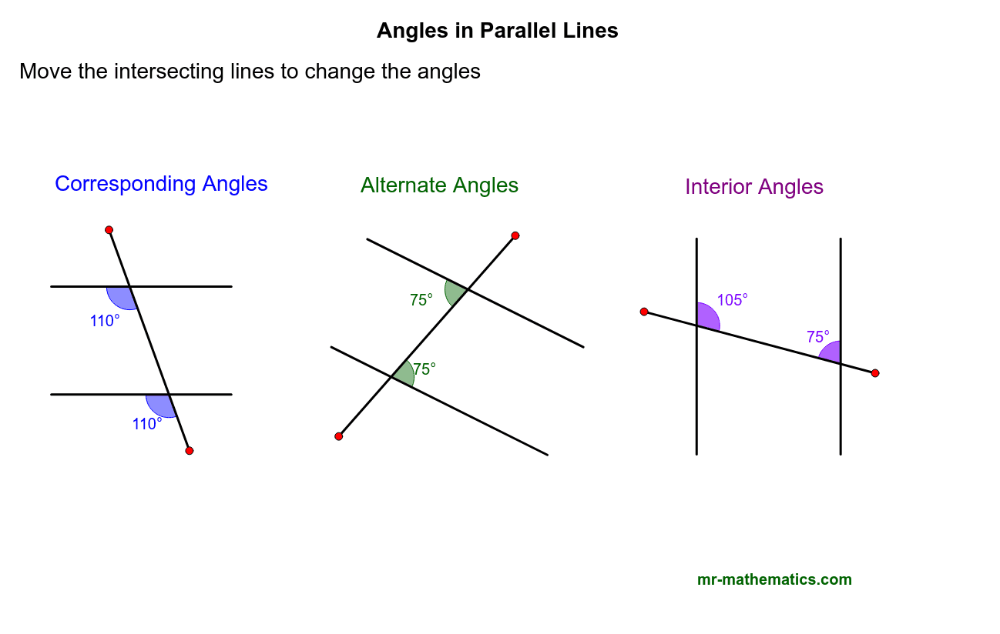

GCSE Maths is an intense course which involves different topics during 2 years. GCSE Maths comprises Year 10 and Year 11.
In today's lesson we will do revision of angles in parallel lines. As a reminder, the angles you should know are given below:
The angles in parallel lines are given below as a recap. You can click the links below to go to which angles you want to revise.
Angle types:Alternate angles are equal. The lines make a Z shape which can also be back to front.
Corresponding angles are equal. The lines make an F shape. Notice that the F shape can be upside down or back to front.
You may find the link below useful. If you want to brush your knowledge, you can check the link below:
BBC Angles in parallel linesAlternatively you can watch a Youtube video to help you revise. The link is given below:
Below you can see the angle types:
